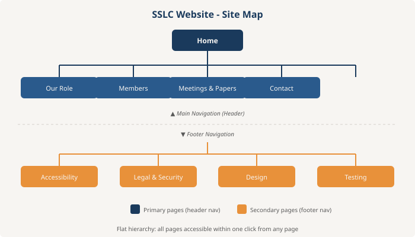
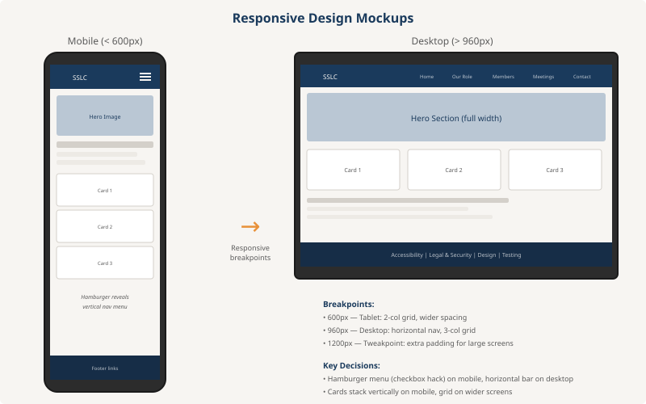

Design
How this website was designed using Mobile-First Responsive Web Design
Introduction
The design aims for a professional yet approachable aesthetic, reflecting the committee’s role as a bridge between students and staff. A warm colour palette (navy, amber, off-white) conveys trust and openness. The SSLC logo, featuring two figures with a connecting arc, appears on every page to establish consistent branding. Every page shares the same header, footer, and stylesheet for visual consistency.
Site Map

Figure 1: Site map showing flat navigation structure
A flat hierarchy was chosen because all nine pages are equally important and should be reachable within one click. Separating primary content pages (header nav) from documentation pages (footer nav) keeps the main menu uncluttered while maintaining discoverability.
Design Mockups

Figure 2: Mobile and desktop wireframes showing responsive behaviour
The mobile design stacks all content vertically with a hamburger menu. The desktop design uses multi-column grids and a horizontal navigation bar. The Membership, Meetings, and Contact pages follow similar patterns to the Home page (single-column mobile, multi-column desktop) and are not shown separately to avoid redundancy.
Design Reasoning
Two breakpoints and one tweakpoint are used, all defined with
min-width to follow the mobile-first approach:
600px (tablet): Content grids switch from one to two columns. Quiz blocks display images beside text. Font sizes increase slightly. This breakpoint targets tablets and small laptops where the extra width benefits side-by-side layouts.
960px (desktop): The hamburger menu is replaced by a horizontal navigation bar. Grids expand to three columns. The contact page uses a two-column layout (address beside form). This threshold was chosen as the point where a horizontal nav comfortably fits all five menu items.
1200px (tweakpoint): Minor padding increases on the hero and page title sections prevent excessively wide content on large monitors.
Menu System
Since JavaScript is not permitted, the responsive menu uses the
CSS checkbox hack: a hidden <input
type="checkbox"> paired with a <label>
styled as a hamburger icon. When checked, the adjacent
<nav> is revealed using max-height
transition. On desktop (>960px), the hamburger is hidden via
display: none and the nav is always visible as a
horizontal bar. This approach was chosen over alternatives like
:target (which modifies the URL hash and disrupts
browser history) or :focus-within (which closes the menu
when clicking a link, causing usability issues).